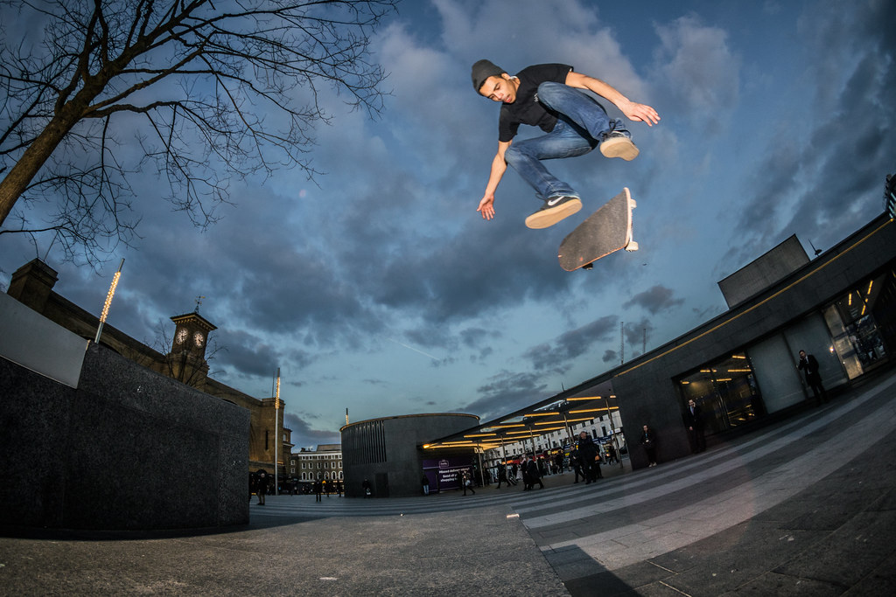

El skate esta relacionado con el surf, la cultura callejera, con el arte urbano, pero muchos monopatinadores apenas patinan en calles o plazas. Son los "rampers", quienes solo patinan en rampas. De hecho, en bastantes competiciones existen dos categorías más extendidas: street y vert (rampa); porque un individuo puede deslizarse por las pendientes de una pista de patinaje.  El surgimiento de este deporte extremo tiene lugar en el estado de California en las décadas de 1960 y 1970, época en la cual los deportes extremos como el surf gozaban de un gran auge mundial. El motivo principal de la creación del monopatinaje se basa en la sustitución de la tabla de surf en tierra. Los primeros diseños de estas consistían en solo un pedazo de madera cualquiera alterado con ruedas de patines principalmente. Luego para el año 1972 se comenzaron a fabricar monopatines con una tecnología más avanzada y específica para esa modalidad. Los materiales de fabricación consistían en hierro suave, de poca resistencia, arcilla y caucho. Más adelante en 1972 se comenzó a notar por medio de revistas y los medios de comunicación este interés por las tablas. Para los años 1975 y 1980 ya la modalidad estaba difundida por todo Estados Unidos. Finalmente para comienzos de la década de 1980, el monopatinaje estaba expandido por todo el mundo. La juventud la adquirió como suya, al igual que los espacios públicos, ya que estos eran los propios para poder practicar el deporte. Creado a partir de una variación del surf, este suele ser un reclamo publicitario para los jóvenes.